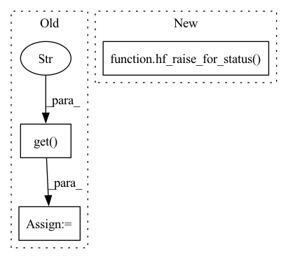

Pattern ID :4688
Before Change
try:
_raise_for_status(resp)
except HTTPError as exc:
request_id = resp.headers.get("X-Request-Id" )
try:
details = resp.json().get("error", None)
except JSONDecodeError:
raise excAfter Change
Keep alias for now.
hf_raise_for_status( response, endpoint_name=endpoint_name)
def _format_error_message(
message: str, request_id: Optional[str], server_message: Optional[str]In pattern: SUPERPATTERN
Frequency: 3
Non-data size: 3
Instances Fragment ID: 16755753
Project Name: huggingface/huggingface_hub
Commit Name: 49c27b4044776c4232e21b2656e1e47a1c240c92
Time: 2022-09-05
Author: lucainp@gmail.com
File Name: src/huggingface_hub/utils/_errors.py
M Class Name: AnonimousClass
N Class Name: AnonimousClass
M Method Name: _raise_convert_bad_request(2)
N Method Name: _raise_convert_bad_request(2)
M Parent Class:
N Parent Class:
M File Name: src/huggingface_hub/utils/_errors.py
N File Name: src/huggingface_hub/utils/_errors.py
M Start Line: 186
M End Line: 201
N Start Line: 280
N End Line: 280
Before Change
Internal version of `response.raise_for_status()` that will refine a
potential HTTPError.
request_id = response.headers.get("X-Request-Id" )
try:
response.raise_for_status()
except HTTPError as e:
if "X-Error-Code" in response.headers:After Change
TODO: deprecate this properly after next release (just after v0.10).
See https://github.com/huggingface/huggingface_hub/pull/1019//issuecomment-1233240452
hf_raise_for_status( response)
@_deprecate_method(version="0.13", message="Use `hf_raise_for_status` instead.")
def _raise_with_request_id(response): Fragment ID: 16755751
Project Name: huggingface/huggingface_hub
Commit Name: 49c27b4044776c4232e21b2656e1e47a1c240c92
Time: 2022-09-05
Author: lucainp@gmail.com
File Name: src/huggingface_hub/utils/_errors.py
M Class Name: AnonimousClass
N Class Name: AnonimousClass
M Method Name: _raise_for_status(1)
N Method Name: _raise_for_status(1)
M Parent Class:
N Parent Class:
M File Name: src/huggingface_hub/utils/_errors.py
N File Name: src/huggingface_hub/utils/_errors.py
M Start Line: 129
M End Line: 171
N Start Line: 264
N End Line: 264
Before Change
def _raise_with_request_id(request):
request_id = request.headers.get("X-Request-Id" )
try:
request.raise_for_status()
except Exception as e:
_add_request_id_to_error_args(e, request_id)After Change
@_deprecate_method(version="0.13", message="Use `hf_raise_for_status` instead.")
def _raise_with_request_id(response):
Keep alias for now.
hf_raise_for_status( response)
@_deprecate_method(version="0.13", message="Use `hf_raise_for_status` instead.")
def _raise_convert_bad_request(response: Response, endpoint_name: str): Fragment ID: 16755750
Project Name: huggingface/huggingface_hub
Commit Name: 49c27b4044776c4232e21b2656e1e47a1c240c92
Time: 2022-09-05
Author: lucainp@gmail.com
File Name: src/huggingface_hub/utils/_errors.py
M Class Name: AnonimousClass
N Class Name: AnonimousClass
M Method Name: _raise_with_request_id(1)
N Method Name: _raise_with_request_id(1)
M Parent Class:
N Parent Class:
M File Name: src/huggingface_hub/utils/_errors.py
N File Name: src/huggingface_hub/utils/_errors.py
M Start Line: 173
M End Line: 181
N Start Line: 270
N End Line: 270